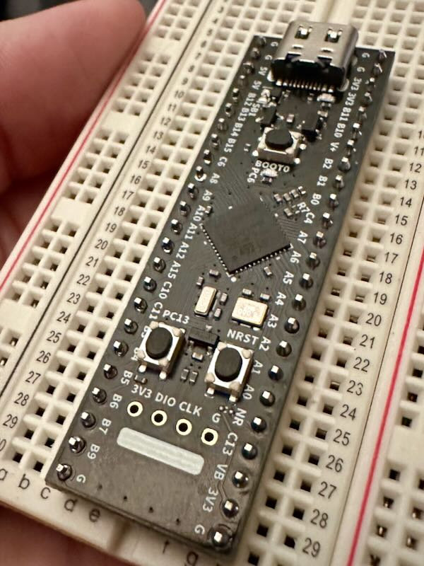
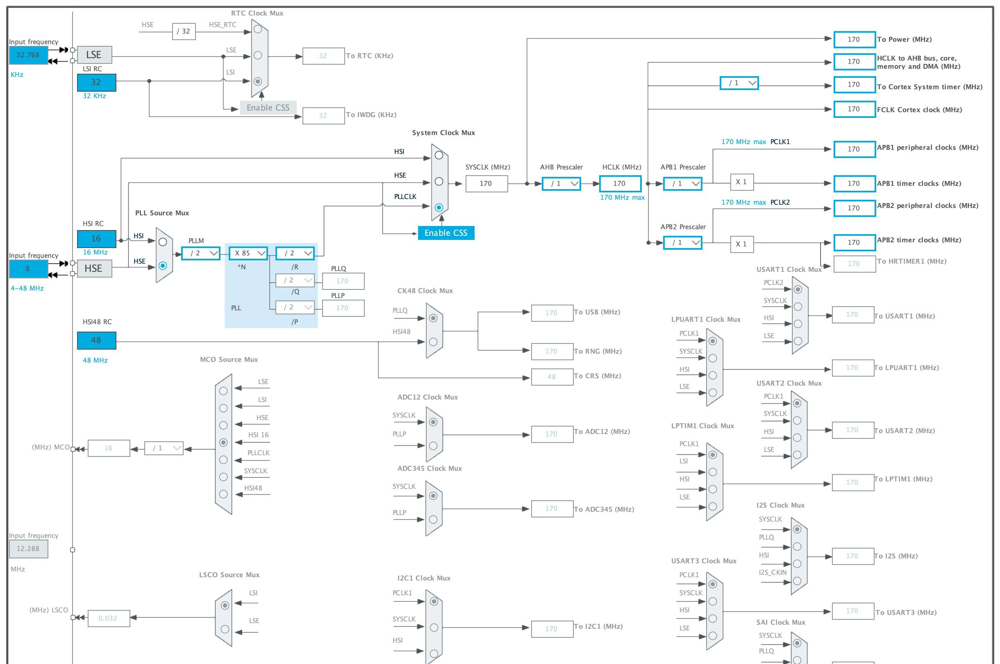

A New Board is Born
Where Have You Been?
The short answer is "around", but the real answer is more complicated. Due to :gestures at world:, I haven't really been mentally in a place where I can spend time working on things like this project. After a few months of just zoning out, I've realized I need the structure of a project to keep me focused, and so I'm trying to pick back up where I left off.
 When last we talked, I was talking about a modular base board built around an STM32H5, but I realized that there was another alternative ... build it around an existing board. So, that's my plan now. This removes a lot of design work, yes, but at least for the initial design, it lets me focus on some other things. I've chosen to use a board from WeAct Studio. These are the people behind the famous Blue Pill and Black Pill STM32 boards. They also make one built around an STM32G474CEU6, which is a 170MHz ARM Cortex-M4 with 128KB of RAM, 512KB of Flash, and 2 CAN-FD buses available. It's in a somewhat long 48-pin package. If you want to buy one, you can find them on your neighborhood massive Chinese marketplace.
Since I'm planning to write all the software on top of Zephyr, and this board isn't in their already extensive list of boards, I needed to add it to that. So, into the breach we go.
First, I read the
documentation.
Since the SOC is supported already thanks to a ton of work from
STMicroelectronics, it really just meant customizing for this specific
instance on this board. To do that, I needed to name the board, and then
create a bunch of files. The name I chose was stm32g474_long under the
weact
vendor
directory. Those files are:
board.yml-
a YAML file describing the high-level meta data of the boards such as the boards names and the SOC.
weact_stm32h474_long.dts-
The hardware description in devicetree format. This declares your SOC, connectors, and any other hardware components such as LEDs, buttons, sensors, or communication peripherals (USB, etc).
Kconfig.weact_stm32h474_long-
This is the base software configuration for selecting SOC and other board and SOC related settings. Kconfig settings outside of the board and SOC tree must not be selected. To select general Zephyr Kconfig settings the Kconfig file must be used.
board.cmake-
Provides information on flashing and debugging the board
weact_stm32h474_long.yaml-
A bunch of metadata that's mostly used by the test runner to help understand what tests to run. Note, I don't know why this one ends in
yaml, but the other inyml, nor whether it matters, but I just copied the style in the documentation. weact_stm32h474_long_defconfig-
Some Kconfig-style presets for building any application. These can be overridden in the application.
Rather than start from a clean slate, I actually decided to "borrow" some of the already made board configs from an existing WeAct board, the STM32G431 model. This gave me a good head start on what I needed to do.
So let's go through the files. I hope my explanations are both reasonably accurate and passably consumable. I'm learning this as I go along, and so this is just my current knowledge.
board.yml
1 2 3 4 5 | |
This is pretty obvious, but the name of the SOC (line 5) is something you have to find in the existing repository. Some of the naming isn't necessarily obvious to me, but it was pretty easy to figure out. Once you get to the right processor family it's not too bad.
weact_stm32h474_long.dts
This is the biggest of all of them, so let's take it from the top (post copyright). First, this is a devicetree format, which is also used Linux. I can't say as I consider myself to know it yet, but I've started to get a feel for it. I've elided empty lines along the way.
7 8 9 10 | |
First, we set the version of the DTS (devicetree) schema that's in use, then we include some existing files to set up some presets.
12 13 14 15 16 17 18 19 20 21 22 23 | |
The first thing to know is that the start of line 12 is the start of the
definition of a node, in this case the root (/) node. Like most
languages, everything inside the curly brackets is part of that
definition.
The /chosen node sets up some defaults. For example, line 17 says that
the node lpuart1 is the default Zephyr console. The & is used a lot
like C to grab the "address of" something else. They're called
phandles.
In this case, lpuart1 is the low power
UART.
Low power means it can function in low power mode when the low-speed
(32.768KHz) clock is in effect. It is, however, limited to 9600bps at
that time.
25 26 27 28 29 30 31 | |
First we set up the on-board LED, in this case, an annoying blue one.
Walking through this, line 25 creates the /leds node to contain all
the LEDs on the board. It then says it's compatible with the gpio-leds
hardware feature, and creates a specific instance /leds/led_0 that
also has an label with a different name, /leds/blue_led (line 27). On
line 28 it sets up the GPIO pins for that LED. Since the LED is attached
to pin PC6, we know that it's part of the C cluster of GPIO pins
(&gpioc), and then pin #6 in that cluster. Finally, we tell it that
the pin is considered active, when it's high. Zephyr can tell the
difference between active high and active low pins. The <> defines an
array, here with 3 elements.
Note we are referencing phandles that are defined outside of our file and have been brought in via the earlier includes.
33 34 35 36 37 38 39 | |
Next, what's an LED that you can't dim? Useless, that's what!
So, as above, we explain that it's compatible with the pwm-leds
feature, and name the node /pwmleds/blue_pwm_led. We then have to set
up the timer that specifically drives the pulse-width modulated (PWM)
signal.
The hidden world of timers
This is hidden in things like Arduino, but in Zephyr and most other embedded systems, you have to know which timers are able to be connected to which GPIO pins. This is often considered an "alternate function" of the pin. On STM32 there are multiple times, and each timer can have multiple "channels". There's various restrictions on them, but that's a topic for another time.
Here, we say this PWM is on channel 1 of timer 3, with a nominal period of 20ms, and "normal" polarity, meaning it's active high.
41 42 43 44 45 46 47 48 | |
Now we define some fancy "keys". This is part of the
gpio-keys
feature, which allows you to map GPIO pins into a set of input events,
rather than just GPIO events. Think of it as mapping the keys on a
keyboard. There are other more
advanced
options for key matrices. The properties are similar to earlier, except
this button is active when it's low (pulled to ground), and then we say
that it emits 0 into the input stream when pressed.
50 51 52 53 54 55 56 57 58 59 60 | |
Here we set up a bunch of aliases that can be used to refer to things.
These work exactly like any other phandle, so referencing &led0 is the
same as referencing &blue_led.
Now comes the beast of a thing .. the clock tree. This is something that if you've never worked low-level (below Arduino, for example), you're probably completely unfamiliar with. There are multiple clock sources, phase-locked loops, and derivative clocks that drive everything. There's an excellent tutorial on the STM32 support forum.
62 63 64 | |
Here we just tell Zephyr that the low-speed internal clock is "okay", meaning you can use it. You'll see this notation somewhat frequently.
67 68 69 | |
Here we do the same thing for the high-speed internal clock, which runs at 48MHz.
70 71 72 73 | |
I got this wrong initially as I misread the schematic, and it resulted in some challenges. I like to use a LED blink program as the initial test because it sorts out the clocks as well as GPIO, and when it was initially set to be a 1s cycle, it was taking 3.something seconds. Something was off.
It turned out that I had both clk_hse and pll wrong. I had copied
them from another SOC which has a different target clock rate, and
different oscillator frequency. There was definitely some trial and
error to sort that out as I also had to make sure I really understood
the STM32 clock tree.
75 76 77 78 79 80 81 82 83 | |
One of the first things that is done is to use a phase-locked
loop to create a
derivative highly accurate clock signal from the input. We tell it that
we want to use &clk_hse we just defined as the source (there's another
separate thing going on for the low-speed clock that's out of scope
here). Then we have to provide all the multipliers and divisors that it
needs to generate the output clock, which are documented in the chip
reference manual, but also some information is in this
post.
The best way to get these is to use
STM32CubeMX
and its clock solver to get it all right.
To get an idea of how complex the clock system is, here's a quick screenshot of the clock configuration section of the app:

85 86 87 88 89 90 91 | |
Here we configure the reset and clock control (RCC) circuit, which is one of the main sources that distributes and times things across the rest of the MCU. We tell it to get its source from the PLL, and that the target frequency is 170MHz. We then provide any scalers needed for the various buses inside the MCU.
Why so many knobs?
You might ask, why is this so damned complicated? The main reason is power management. If you're worrying about power consumption, say because you're battery powered, slower clocks use less power. A lot less. Being able to tune clocks across the system to only use the "minimum" clock to get the job done lets you seriously dial down the power consumption of the MCU.
In our case, we don't really care because everything in mains-powered, and we are only talking about milliamps. But in a battery-powered system, you could reduce the power consumption by a factor of 5 or more.
93 94 95 96 97 | |
Here we're creating a node usb on the phandles specifically for the
USB AF on pins PA11 and PA12 as the first (0th) configuration of pin
control, which in this case is labeled as "default" and marked as OK.
99 100 101 102 103 104 105 106 107 108 109 110 111 112 | |
Something similar is happening here, but in the lpuart1 we have
something different. We have 2 different configurations (0, 1) with
different names (aliases basically) of "default" and "sleep". We're
saying that in the normal running mode, this is the TX and RX pins for
the low-power UART #1, but when the chip is asleep, it flips to a
regular analog I/O, which allows for easier wake-up.
114 115 116 117 118 | |
...
120 121 122 123 124 125 | |
Here we're defining an
SPI set of
pins. The cs-gpios defines the pin PB6 as the chip select line for the
SPI port, marks it as active when it's low, and then attaches a pull-up
resistor to it internally to hold it inactive by default.
127 128 129 130 131 132 133 134 135 136 137 138 139 | |
More of the same here, but without the chip select defined yet. This can be done in the user's code.
141 142 143 144 145 146 147 148 149 150 151 152 153 154 155 156 157 158 159 160 161 162 163 164 165 | |
We need to set up our timers, and we configure them for use as PWM
timers as well. The st,prescaler is an STM32-specific property that
says that the timer should be "scaled" down by 1000x.
We also define a low-power tick source leveraging the low-power timer #1.
Unfortunately, I don't actually understand the clocks property and
copied it from another definition. I have no idea if it works.
167 168 169 170 171 | |
The STM32 has a real-time clock (RTC) that keeps a time and date
running as long as it's not in the most aggressive sleep state. Again,
copied, because the clocks property escapes my understanding and
searching.
173 174 175 176 177 178 179 180 181 182 183 184 185 186 187 188 189 190 191 192 193 194 195 196 197 | |
We need to break the flash storage into a few pieces here. We define 4 partitions for the boot loader, two versions of the code, and a 4Kb storage area that you could lay a filesystem abstraction on top of, or just store things directly into.
199 200 201 202 203 204 205 206 207 208 209 | |
Just a few peripherals, the watchdog timer (iwdg), random number
generator (rng), and die temperature sensor (die_temp). We simply
mark them as available and ready.
211 212 213 214 215 216 217 218 219 220 221 222 223 | |
We wire up pin PA0 to ADC #1 channel 1. We tie it to the APB bus clock
(st,adc-clock-source), rather than letting it be independent, and then
we scale it down by a factor of 4 (st,adc-prescaler).
225 226 227 228 229 230 231 232 233 234 235 236 237 238 239 | |
The STM3G474 has 3 CAN-FD (or is it FDCAN? I see it written both ways), and so we configure two of them. At this point, this should be mostly understandable.
241 242 243 244 245 246 247 | |
And finally, we enable the VREF+ and VBAT nodes on the chip. This allows them to be measured with the ADC.
Kconfig.weact_stm32h474_long
1 2 | |
board.cmake
1 2 3 4 5 | |
Now we setup some things to make programming the board easier. You can
get the values for --device and --alt by running the dfu-util -l
when the board is plugged in and in DFU mode (for this one, that means
holding down the BOOT0 button while pressing the NRST button). You'll
get something like this:
$ dfu-util -l
dfu-util 0.11
Copyright 2005-2009 Weston Schmidt, Harald Welte and OpenMoko Inc.
Copyright 2010-2021 Tormod Volden and Stefan Schmidt
This program is Free Software and has ABSOLUTELY NO WARRANTY
Please report bugs to http://sourceforge.net/p/dfu-util/tickets/
Found DFU: [0483:df11] ver=0200, devnum=1, cfg=1, intf=0, path="1-1", alt=2, name="@OTP Memory /0x1FFF7000/01*1024 e", serial="205939885533"
Found DFU: [0483:df11] ver=0200, devnum=1, cfg=1, intf=0, path="1-1", alt=1, name="@Option Bytes /0x1FFF7800/01*048 e/0x1FFFF800/01*048 e", serial="205939885533"
Found DFU: [0483:df11] ver=0200, devnum=1, cfg=1, intf=0, path="1-1", alt=0, name="@Internal Flash /0x08000000/256*02Kg", serial="205939885533"
Looking at this we can see the vendor and device ID in brackets
([0483:df11]), and the alt targets.
weact_stm32h474_long.yaml
1 2 3 4 5 6 7 8 9 10 11 12 13 14 15 16 17 18 19 20 21 22 23 24 25 | |
This metadata is used primarily by the test runner to help determine which parts of the test suite to run. The reason is you could target multiple boards with different capabilities, and then adjust both your application and the testing to meet them.
weact_stm32h474_long_defconfig
1 2 3 4 5 6 7 8 9 10 11 12 | |
Finally, we set some default Kconfig settings for every project that they can override. You can learn more about each of these, although I think they're mostly self-evident, from this search interface.
Problems I Ran Into and Open Questions
I ran into a few problems along the way and have a few open questions.
- As mentioned earlier, the clock tree was the hardest part that I ran into. This is also why I like an LED blink script to test the board with. It's the simplest thing to run, but it exposes timing issues quite quickly. You might not find a small error, but you'll definitely find most of them.
- I still don't really understand a lot of the phandles for things like clocks. This is just a complex topic, and my search foo isn't finding the information I need to grok it. I'll get there eventually.
- It's unclear to me how you would start with a clean slate. Definitely starting from a similar board helped enormously.
- Eventually, I want to figure out how to add a new SOC. They're also defined through the device tree paradigm.
I will be putting this up on Github at some point, but need to write some documentation first, and make sure that I've shaken it out some, before I subject the world to it. My intention is to submit it to the Zephyr project for inclusion in future releases.
Posted on Github
I have posted this on
Github, and it's
been renamed as the core board since it turns out both forms of
the board have the same pinouts just arranged slightly differently.
To do is cleaning it up and submitting it to the Zephyr project.
Blink for Me Baby
Here's the blink script that I used.
1 2 3 4 5 6 7 | |
Just normal includes to get access to everything.
16 17 18 19 20 21 22 23 | |
Here's where all that device tree work comes into play. We first resolve
the led0 alias, and then we get the GPIO spec for it. This abstraction
means that you can have a bunch of different boards with slightly
different wiring that don't require any software changes. For many uses,
it is unfortuantely, maybe an abstraction that obscures how things work.
I'm definitely of a mixed mood about it.
25 26 27 28 29 30 31 32 33 34 35 36 37 | |
As befits an embedded system, there's no parameters passed to main. I
mean, where would they come from?
We then make sure that there's a GPIO pin attached to the led
variable, and then configure it to be an output pin.
39 40 | |
Here we enable the USB functionality. I ran into some issues here,
because according to the docs, this should return 0 on success, and
something negative on failure. But I got negative values no matter what,
and yet the USB was working. On the heap of things to dig into more.
I had originally wanted to loop here to wait until the console is
attached. For that, I just use
minicom, and it's executed on
my M1 Macbook Air as minicom -D /dev/tty.usbmodem1101 -b 115200. Not
really sure that the baud rate matters, but I used it anyway.
42 43 44 45 46 47 48 49 50 51 52 53 54 | |
Finally, we throw the program into an infinite loop and toggle the pin off and on, printing out the current state of the pin and sleeping 1 second, leading to 1 second on and 1 second off. The program is marginally more complicated than an Arduino sketch, but that's largely because Arduino's framework hides many things from you. Up to a point, this is a huge win, until it's not. For my overly complicated project, I wanted to have it all exposed. I'll be diving into more advanced features of Zephyr later like pub/sub, threading, sensor framework, etc.
And with that, we're kinda done? Somewhat done? The magic smoke didn't come out of the chip, at least!